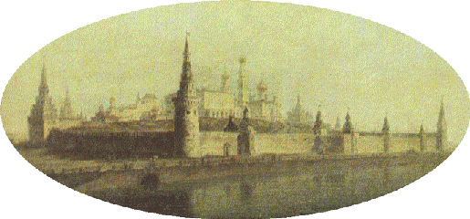

Современный Кремль построен в конце XV - начале XVI в.
Неприступная крепость со всех сторон была окружена водой: с юга - Москва-река, с севера и запада - река Неглинная, с востока - ров глубиной 10 м и шириной 32 м, выложенный белым камнем.
Протяженность укреплений более 2-х километров, высота от 5 до 19 м, толщина от 3,5 до 6,5 м. Из стен выступают вперед 18 боевых башен.
Расстояние между ними позволяло простреливать весь защищаемый периметр.
Первоначально башни сверху были плоскими, только навесы прикрывали воинов от дождя и снега.
В XVII веке, когда границы государства отодвинулись от Москвы, и Кремль постепенно утратил свое военное значение, башни были украшены декоративными шатрами.
Несколько раз Московскому Кремлю грозило уничтожение.
В конце XVIII века по приказу Екатерины II архитектор В.И. Баженов проектировал снос древних стен и строительство на их месте нового дворца. В 1812 г.
Наполеон хотел взорвать святыню России. В 1917 г. красногвардейцы обстреливали крепость из трехдюймовых орудий, чтобы выбить из нее юнкеров. В 1945 г. немцы бомбили город.
Однако судьба сохранила Кремль, и в наше время он стал символом Российской государственности.
Спасская башня
Самая величественная и красивая башня Кремля, она по праву считается главной.
Через ее ворота проходят торжественные процессии.
Первоначально называлась Фроловской, а Спасской - с 1658 г., когда над проездными воротами была установлена икона Спаса.
Башня десятиэтажная, три из которых, занимают Куранты - часы с боем.
Никольская башня
Свое название получила от находившегося неподалеку Никольского монастыря.
Одна из четырех "проездных" башен.
Ворота защищены отводной стрельницей.
Башня была взорвана французами в 1812 г. и восстановлена в 1816 г.
Угловая Арсенальная башня
Нынешнее название башня получила всего около 200 лет назад.
Раньше она называлась Собакиной по имени располагавшейся неподалеку усадьбы бояр Собакиных.
Башня защищала слияние реки Неглинной с искусственным рвом, вырытым вдоль Красной площади.
В подземелье башни был спрятан родник.
Троицкая и Кутафья башни
Троицкая башня названа специальным царским указом по находившемуся рядом Троицкому подворью.
Она построена около самой реки Неглинной.
Ее массивное основание глубоко уходит в землю.
Для проезда через реку переброшен мост, защищаемый предмостной Кутафьей башней.
Боровицкая башня
Проездная Боровицкая башня получила свое название от древнего хвойного бора.
Не самая высокая ступенчатая башня выглядит очень мощной.
Через ее ворота проходила дорога, по которой в Кремль доставляли хозяйственные товары, продукты и воду из Москвы-реки.
Водовзводная башня
Внутри Водовзводной или Свибловой башни (по имени находившегося рядом двора бояр Свибловых) был вырыт колодец.
С помощью специальной машины вода поднималась в центральный водоем, а оттуда по свинцовым трубам подавалась в верхние кремлевские сады.
Это был первый в Москве водопровод.
Башню взорвали французы во время наполеоновского нашествия 1812 г.
Восстановлена архитектором О.И. Бове.
Беклемишевская башня
Стройная, круглая в плане угловая башня названа по имени бояр Беклемишевых, имевших неподалеку свой двор.
Иногда ее еще называют Москворецкой по расположению на месте слияния искусственного рва с Москвой-рекой.
Царская башня
Изящная башенка построена взамен обветшавшей деревянной вышки, с которой, по преданию, Иван Грозный любил наблюдать за событиями на Красной площади.
На втором ярусе висел колокол - Спасский набат.
Другие башни
- Сенатская башня
- Средняя Арсенальная башня
- Комендантская башня
- Оружейная башня
- Благовещенская башня
- Тайницкая башня
- 1-я Безымянная башня
- 2-я Безымянная башня
- Петровская башня
- Константино-Еленская башня
- Набатная башня
Справочная информация
| Башня |
Год сооружения |
Архитектор |
Высота |
| Спасская | 1491 | П. Соларио | 71 |
| Никольская | 1491 | П. Соларио | 70 |
| Арсенальная | 1492 | П. Соларио | 60 |
| Троицкая | 1495 | П. Соларио | 80 |
| Боровицкая | 1490 | П. Соларио | 54 |
| Водовзводная | 1488 | А. Джиларди | 61 |
| Беклемишевская | 1487 | М. Руффо | 46 |
Более подробно о Москве и Московском Кремле можно прочитать на специализированных сайтах.
Вы можете скачать себе текстовый вариант этой страницы.
Если вы захотите поделиться своими мыслями о нашей страничке, пришлите письмо по электронной почте.
Когда были впервые установлены часы на Спасской башне точно не известно.
Скорее всего, это произошло вскоре после ее сооружения.
В 1621 г. под руководством англичанина Христофора Галовея русские мастера изготовили удивительные часы.
В них вращался циферблат, а указательной стрелкой служил неподвижно закрепленный сверху "луч солнца".
В конце XVII века часы сломались, и по указу Петра I, их заменили на новые голландские часы с музыкой - куранты.
Эти часы много раз чинили, перенастраивали, практически собирали заново из старых деталей.
За свою долгую жизнь куранты исполняли много очень разных мелодий: "Ах, мой милый Августин!", с середины XIX века - "Коль славен наш Господь в Сионе" и "Преображенский марш", с 1918 г. - "Интернационал" и марш "Вы жертвою пали".
С 1938 года куранты "замолчали", отбивая лишь четверти и целые часы.
Летом 1996 года во время церемонии инаугурации Б. Ельцина впервые зазвучали "Патриотическая песня" и "Славься" Глинки.